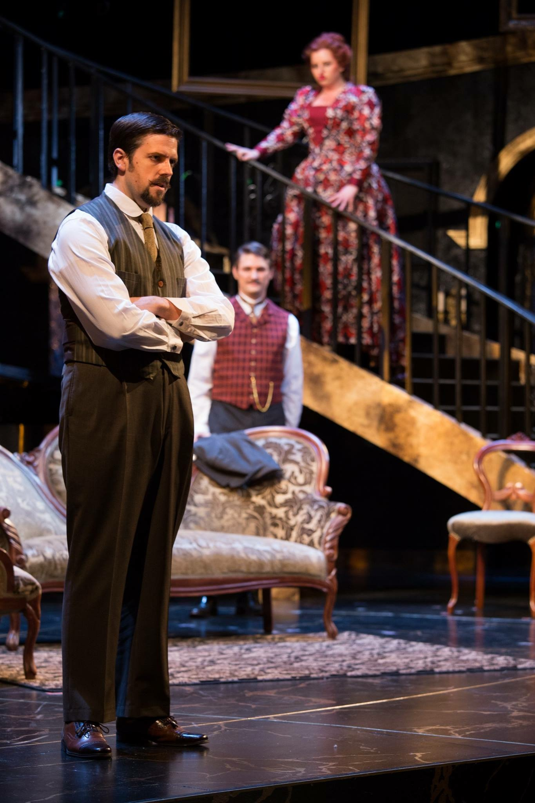
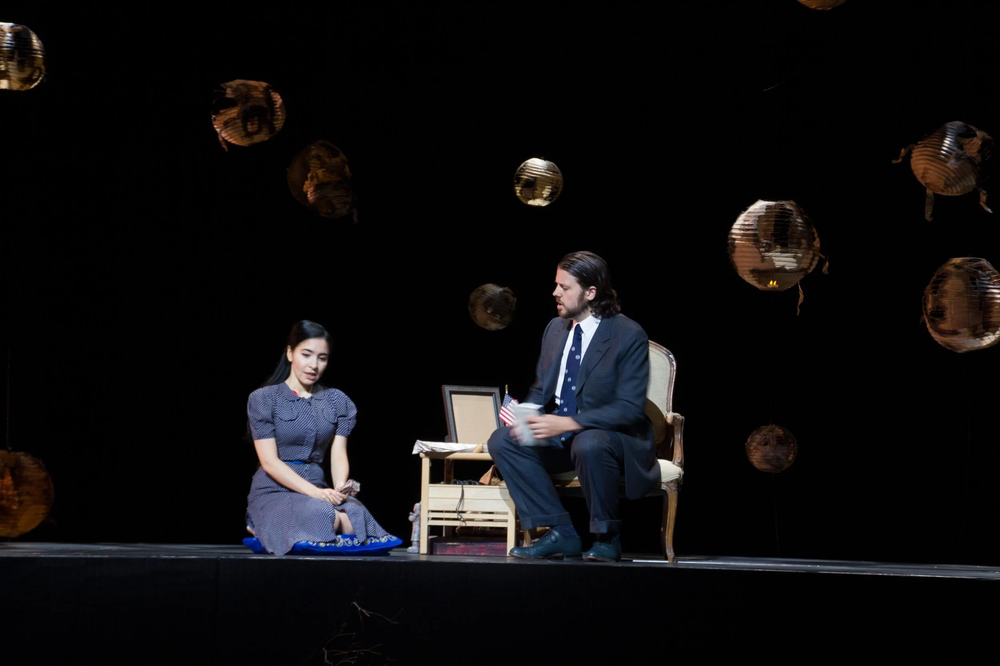
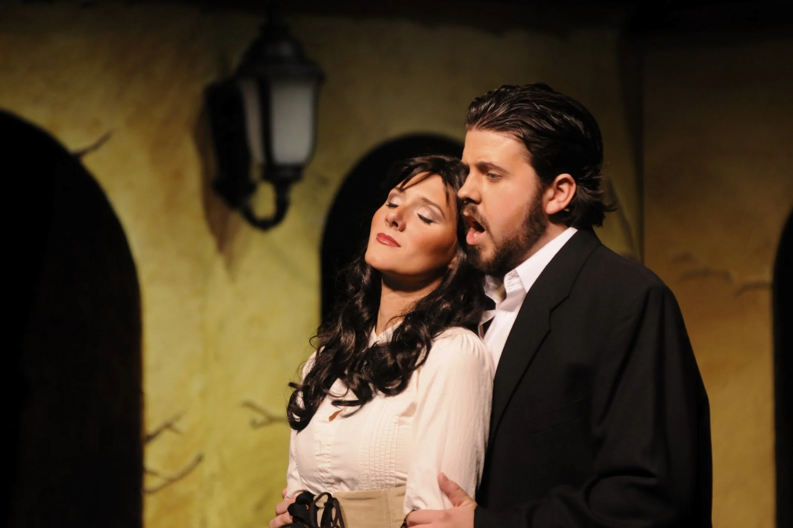
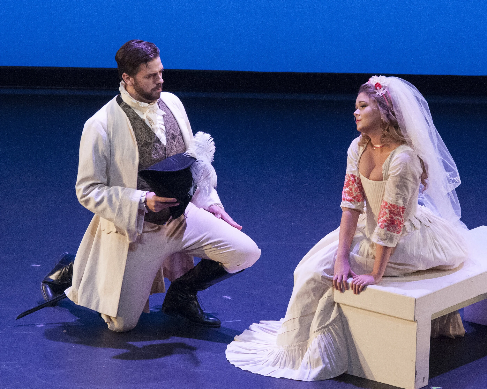
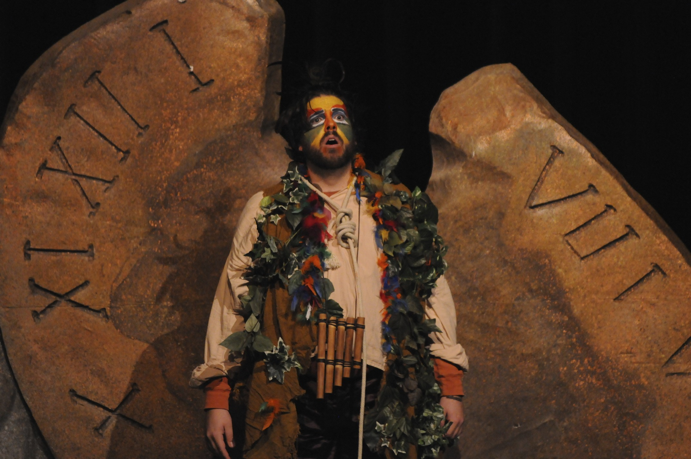
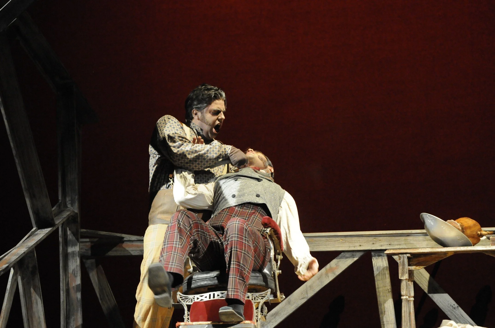
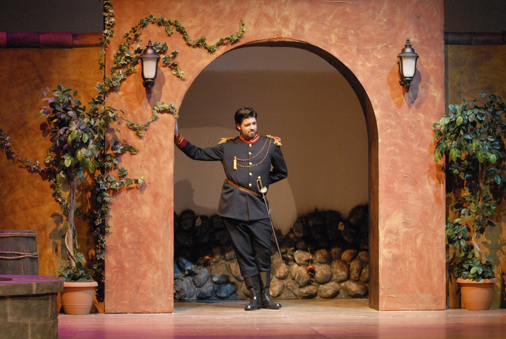

Baritone · Director · Music Director
On Stage
Credits, recordings, and production stills from a career spanning musical theatre, opera, concert, and direction work.

Credits, recordings, and production stills from a career spanning musical theatre, opera, concert, and direction work.
Selected recordings from recital, opera, and concert.
Stills from selected productions.









| Angus Tuck upcoming | Tuck Everlasting | Sandy Arts | 2026 |
| Russian Soloist | Fiddler on the Roof | Centerpoint Theatre | 2026 |
| Harry Bright | Mamma Mia! | Riverside Productions | 2025 |
| Sir Harry | Once Upon a Mattress | Community Performance Series | 2022 |
| Friar Lawrence | Romeo and Juliet | OSU Bard in the Quad | 2021 |
| Andrew Carnes | Oklahoma! | Sundance Summer Theatre | 2019 |
| Chauvelin | The Scarlet Pimpernel | Cache Regional Theatre | 2010 |
| Franz | The Sound of Music | Utah Festival Opera & Musical Theatre | 2010 |
| Joseph Hewes | 1776 | Utah Festival Opera & Musical Theatre | 2008 |
| Officer Krupke | West Side Story | Utah Festival Opera & Musical Theatre | 2007 |
| Oscar Hubbard | Regina | Maryland Opera Studio | 2016 |
| Papageno | Die Zauberflöte | Maryland Opera Studio | 2016 |
| Don Giovanni | Don Giovanni | Maryland Opera Studio | 2015 |
| Ollie Jr. | A Family Reunion | Maryland Opera Studio | 2015 |
| Sharpless | Madama Butterfly | Charlottesville Opera | 2015 |
| Sharpless | Madama Butterfly | Castleton Festival | 2014 |
| Falstaff | Falstaff | University of Oklahoma | 2013 |
| Thoas | Iphigénie en Tauride | University of Oklahoma | 2013 |
| Seneca | L'incoronazione di Poppea | University of Oklahoma | 2011 |
| Papageno | Die Zauberflöte | Utah State University | 2011 |
| Sweeney Todd | Sweeney Todd | Utah State University | 2010 |
| Gianni Schicchi | Gianni Schicchi | Utah State University | 2010 |
| Rambaldo | La rondine | Utah State University | 2009 |
| Vidal Hernando | Luisa Fernanda | Utah State University | 2008 |
| Belcore | L'elisir d'amore | Utah State University | 2007 |
| Father / Peter | Hansel & Gretel | Utah State University | 2007 |
| Top | The Tender Land | Utah State University | 2006 |
| Haydn | The Creation | Corvallis Repertory Singers | 2019 |
| Brahms | Ein Deutsches Requiem | University of Maryland | 2015 |
| Fauré | Requiem | Grace Church, Alexandria | 2015 |
| Britten | War Requiem | The Baltimore Symphony | 2014 |
| Saint-Saëns | Christmas Oratorio | Silver Spring United Methodist | 2014 |
| Beethoven | Symphony No. 9 | University of Oklahoma | 2013 |
| Rutter | Mass of the Children / Gloria | Tulsa Oratorio Chorus | 2012 |
| Vaughan Williams | Hodie | Tulsa Oratorio Chorus | 2012 |
| Mendelssohn | Die erste Walpurgisnacht | University of Oklahoma | 2011 |
| Haydn | Nicolaimesse | University of Oklahoma | 2011 |
| Beethoven | Symphony No. 9 | Utah State University | 2009 |
| Stage Director | Zazà | The Crane Opera Ensemble | 2022 |
| Producer / Vocal Director | Once Upon a Mattress | Community Performance Series | 2022 |
| Stage Director | The Medium | The Crane Opera Ensemble | 2021 |
| Stage Director | Mahagonny Songspiel | The Crane Opera Ensemble | 2021 |
| Stage Director | L'elisir d'amore | Oregon State University | 2021 |
| Music Director | Romeo and Juliet | OSU Bard in the Quad | 2021 |
| Stage Director | The Secret Garden | Oregon State University | 2020 |
| Stage Director | La rondine | Oregon State University | 2019 |
| Stage Director | Mozartistry | Oregon State University | 2019 |
| Music Director | Shakespeare in Love | Oregon State University | 2019 |
| Music Director | Guys and Dolls | Providence Hall H.S. | 2017 |
| Stage Director | So Many Possibilities | Oregon State University | 2017 |
| Stage Director | Mozart Scenes Program | University of Oklahoma | 2011 |
| Doctor of Musical Arts | Opera and Voice Pedagogy | University of Maryland | 2016 |
| Master of Music | Voice | University of Oklahoma | 2013 |
| Bachelor of Music | Vocal Performance | Utah State University | 2010 |
| Bachelor of Music | Choral Music Education | Utah State University | 2011 |
Interested in working together?
Get in Touch